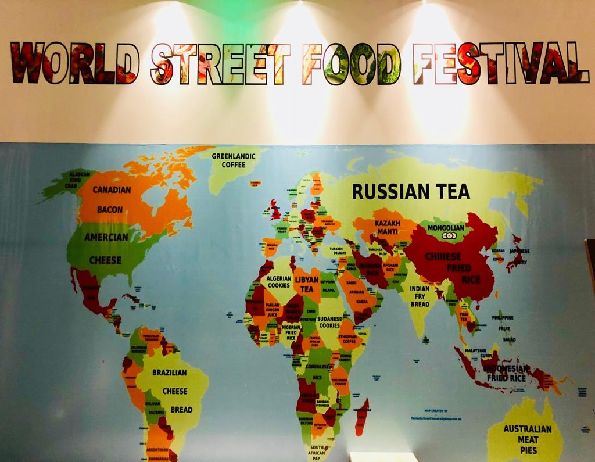

 World Street Food Festival” to be organized from 9th November to 18th November 2018 Indore : This November, Indore Marriott Hotel is bringing the most epic street food from the world over to your plate! The Indore Kitchen restaurant of Indore Marriott Hotel has never failed to amaze the food admirers of the city with its delectable delicacies and taste. This time too it has pulled out a surprise out of its Pandora’s box by organizing 10 day ‘World Street Food Festival’ from 9th November to 18th November 2018. The guests will be able to savor the best of dishes from around the world while enjoying a festival atmosphere from 6:30 pm to 11:30 pm at Indore Kitchen restaurant of Indore Marriott Hotel.